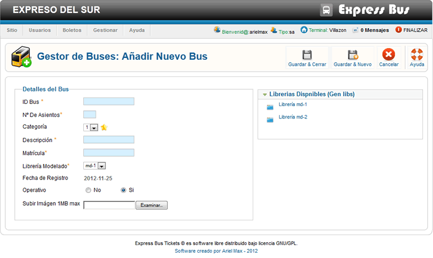

Ayuda Añadir Nuevo Bus
Este sencillo formulario nos permite añadir un nuevo bus en el sistema los campos marcados con * son obligatorios, los pasos son muy simples:
En el campo Nº De Asientos * colocamos el número de asientos del bus este debe corresponder con la librería de generacion mdx. para ver el número de asientos soportados de la librería hacemos en la lista de Librerias Disponibles situada a la derecha.
En el campo categoría colocamos la categoría o nivle de confort del bus para esto se emplean estrelas, 1,2,3,4,5 estrellas.
En el campo Descripción colocamos una breve descripción de bus ej: Bus panorámico, servicio dealmuerzo, etc.
En el campo ID Bus * colocamos el número de identificación del bus, cada bus tine un número impreso, este número no es la matrícula del vehículo.
En la opción Operativo indicamos si el bus esta en funcionamiento, si este esta en manteniemiento marcamos la opción no.
En la opción Baño seleccionamos si el bus tiene baño o no.
esta opción se utiliza en las terminales orígen y destino final, en las demas terminales intermedias no se recomienda activar esta opción.
En el campo Subir nos permite subir una foto del bus, los formatos soportados son: .jpg, .png El tamaño máximo de la imágen no debe exeder 1MB, tampoco el nombre de la imágen debe contener caracters extraños o no permitidos.
En el campo Librería Modelado seleccionamos la librería de modelado que utilizara el bus, esta librería esta encargada de generar los asientos siguiendo un estandar de bus, cada bus es diferente en cuanto a la distribución de asientos es por eso que debemos escojer la librería adecuada para el bus para ver el modelo de generación de la librería puedes hacer clic en la lista de librerias situada en la parte derecha.
En el campo Matrícula Colocamos la matrícula del vehículo.
Librerias Dispnibles en esta lista nuestra todas las librerias instaladas actualmente al hacer clic en una librería nos muestra el modelo de generación.